סולם הוודאות ומונחי המחקר — מה המילים האלה אומרות
תוכן העניינים — תשעה פרקים
אברהם ("אברמק") קוטנר — Abram Kutner במסמכי המלחמה — נולד ב-15 באוגוסט 1928 באוזורקוב שבפולין, בנם של ישראל קוטנר, סוחר תבואה, וצביה לבית בנדוס. הוא עבר את גטו לודז' — בסוף הקיץ של 1942 נרשמו הוא, הוריו ושרה באותה דירה, ברחוב קניגסברג 4 — הובא ממנו לאושוויץ, ובפברואר 1945 נרשם במחנה מאוטהאוזן כאסיר 133332 — "תלמיד", רווק, "קרובים: לא ידוע". הוריו ואחותו הצעירה פייגה, בת תשע, נספו; אחותו הבכורה שרה שרדה את אושוויץ, ברגן-בלזן ובוכנוולד, ובשנות החמישים מילאה עליהם דפי עד ביד ושם.
אחרי המלחמה — לפי אתר הזיכרון של הבית — היה מילדי סלווינו, בית הילדים היהודי בהרי ברגמו שבאיטליה; ב-1947 הוא — "קוטנר אברהם, 16, אוזורקוב" — ברשימת מעפילי "חיים ארלוזורוב" שגורשו לקפריסין, ו"Kutner Abram" ברשימת ילדים יתומים שהועברו ממחנות המעצר בקפריסין; ובשנת 1952 הוא בפנקס הבוחרים של קיבוץ צאלים, ובשורה שאחריו צפורה קוטנר, אשתו (המחקר עליה). לפי "רשימה קצרה" באותו אתר, היה המזכיר הראשון של צאלים ועבד בכור הגרעיני בדימונה. נפטר ב-19 במרץ 1986 (ח' באדר ב' תשמ"ו), ונקבר עם צפורה בבית העלמין הישן של באר שבע, תחת מצבה "לזכר הוריהם ובני משפחתם שנספו בשואה".
כל מסמך שנקרא מופיע פעמיים — קישור אל הרשומה בארכיון וקישור אל עותק שמור; גם ממצא שלילי נרשם (9.4).
מאיפה להתחיל
- אוזורקוב — ההורים והאחיות — שני דפי העד שמילאה אחותו שרה.
- המלחמה — לודז', אושוויץ, מאוטהאוזן — כרטיס האסיר.
- סלווינו — בית הילדים באיטליה.
- קפריסין וצאלים — העלייה, והמסמך הישראלי הראשון.
- שנת הלידה — שלוש גרסאות — 1927, 1928, 1930.
- הפעולות הפתוחות — מה עוד חסר.
1. תמצית
אברהם קוטנר נולד באוזורקוב, עיירה כ-25 ק"מ צפונית-מערבית ללודז', ב-15.8.1928 — כך בכרטיס האסיר שלו ממאוטהאוזן.[1] הוריו — ישראל קוטנר (נולד 1892 בסטריקוב, בן צבי וחיה, סוחר תבואה) וצביה (Cywia) לבית בנדוס (ילידת אוזורקוב, בת אברהם ושרה) — ידועים משני דפי עד שמילאה בתם שרה מלוטק בשנות החמישים;[2][3] שניהם נספו, לפי דפי העד, באושוויץ. בדפים — "נשוי, 3 ילדים"; בשמה מופיעה רק פייגה, שנלקחה בת תשע מגטו לודז' "למקום בלתי ידוע";[2] שרה היא הממלאת ("בת"); שאברהם הוא הילד השלישי — כמעט ודאי (4.1, 4.2).
אברהם, הוריו ואחותו שרה רשומים באותה דירה בגטו לודז' — Königsberger Straße 4, דירה 35: ההורים ושרה "מאוזורקוב" מ-26.8.1942, ואברהם, שהיה בגטו כבר קודם בכתובות אחרות, מ-15.9.1942, "שוליה של חייט";[4][14] אותה כתובת נושאים כרטיס האסיר שלו וכרטיס האסירה של שרה. הכרטיס רושם "הוכנס 22.8.44 Au" — אושוויץ — ו"מאוטהאוזן 23.2.45", אסיר 133332, "יהודי פולני", מקצוע "תלמיד".[1] אחרי המלחמה — בבית הילדים של סלווינו באיטליה: "Kutner Avraham (Abram)", 1930, ברשימת ילדי סלווינו של אתר הזיכרון לבית, ובאותו אתר, ב"רשימה קצרה" של עיסוקי הילדים בבגרותם, שלפי האתר מבוססת על ספרו של אהרן מגד: אברהם גורש לאושוויץ ועבר "צעדת מוות" עד זקסנהאוזן (4.3).[8] מסמכים בני-זמנם מ-1946–1947: רשימת הפליטים היהודים באיטליה, 1946 (שורת אינדקס — ככל הנראה); ורשימת עצורי קפריסין ורשימת המעפילים בעיתון, מרץ 1947 (4.3, 5.1). מאחרי מאוטהאוזן (פברואר 1945) ועד סוף השנה — לא נמצא מסמך.
ב-1947 "Kutner Abram" — יליד 1930 לפי הרשימה, וכמעט בוודאות הוא — נמנה, לפי תיאור המאגר, עם "המכסה השנייה של ילדים יתומים" שהועברו ממחנות המעצר בקפריסין, ובעמודה שאחרי שמו — האונייה "Ch. Arlozorof".[5] וכבר במרץ 1947 פרסם "לקרוב ולרחוק" את רשימת מעפילי "חיים ארלוזורוב" שגורשו לקפריסין, ובה: "קוטנר אברהם, 16, אוזורקוב".[19] בשנת 1952 אברהם קוטנר, יליד 1930, בפנקס הבוחרים של קיבוץ צאלים, ובשורה שאחריו צפורה קוטנר, ילידת 1932.[6] באותו עמוד של רשימת קפריסין, בשורה 452 — "Balem Cypora", ילידת 1931, באותה אונייה (5.1).
2. מה ידוע מהמשפחה
נקודת המוצא היא עץ המשפחה שבנתה המשפחה ב-MyHeritage — "אתר אילן היוחסין של משפחת Achimeir" — זיכרון משפחתי שנרשם, לא רשומה:[7]
- אברהם קוטנר, "סביבות 15 באוגוסט 1928", אוזורקוב, פולין. בפי המשפחה — אברמק.
- נפטר בין 18 ל-19 במרץ 1986; נקבר בבית הקברות הראשון (הישן) של באר שבע.
- הוריו: ישראל קוטנר וצביה (שם המשפחה שלה בעץ — בנדוס); סבו וסבתו מצד האב — הרש וחיה; מצד האם — אברהם ושרה בנדוס.
- אחיותיו: שרה (14.8.1923 – 29.8.2009), נשואה למרדכי מלוטק (1919–2010); ופלה/פייגה, "נספתה בשואה".
- דודים: רבקה, פייגה ופישל קוטנר; יעקב (נ' 1890) ושימק בנדוס.
- נשוי לצפורה לבית בלם (1932–2006). ילדיהם, שניהם ילידי צאלים: אילנה (21.10.1957), נשואה מ-7.9.1981 לשמשון אחימאיר (נ' 26.1.1954; על הוריו, יעקב ומרים בלומנטל — המחקר על יעקב, המחקר על מרים) — ילדיהם טל (1987), איל (1989) ושירי (4.1.1998); טל נשואה לאוהד צדוק, ובנותיהם יסמין (12.9.2019) ויערה (20.9.2020) צדוק; ושאול (16.3.1959), נשוי מ-21.9.1987 לדפנה מנדל — ילדיהם ניצן (25.5.1990), נטע ויובל קוטנר.
כל אחד מהפריטים האלה נבדק מול הרשומות שלהלן; מה שאושר — מסומן, ומה שלא — נשאר טעון אימות.
ומפי בתו, אילנה אחימאיר (20.10.2026):[16] אביה לא סיפר על עברו ולא דיבר עליו; הוא נפטר ב-19 במרץ 1986; הוא וצפורה נישאו ברבנות בבאר שבע — באו מקיבוץ צאלים, וחזרו לקיבוץ באותו ערב. שם המשפחה באנגלית — Kutner. זו עדות משפחתית — מאומת כעדותה. ובמרץ 1952 בערך נרשמו לנישואין ברבנות באר שבע (5.2).
ועל אברהם, מפי צפורה עצמה, בעדותה ביד ושם ב-1990, ארבע שנים אחרי מותו:[17] "בעלי היה גם כן מאותה קבוצה, אבל בעלי היה במחנה ריכוז בפולין והוא מעיירה קטנה ליד לודז'"; "אחותו ניצלה"; הוא מת "בגיל צעיר בן 56"; "כשהיה מתקרב יום השואה ... הוא היה סוגר את עצמו ובוכה". לצאלים הגיעו "כקבוצת נח"ל", אחרי שלוש שנות צבא, והיו "הראשונים שם". העדות — מאומת כעדותה; "בן 56" קרוב ל-1930 (בדיוק — 55) ורחוק מ"בן 57" שעל המצבה (פרק 6).
3. אוזורקוב — ההורים והאחיות
3.1 דף העד של ישראל קוטנר
שרה מלוטק, "בת", מקריית אונו, מילאה דף עד על אביה.[2] התאריך בכתב ידה — «15.XII.» ושנה שאינה קריאה; "תשי"ג 1953" המודפס בטופס הוא שנת חוק יד ושם, לא שנת המילוי. מספרי הדפים (329533, 379532) מתיישבים עם אמצע שנות החמישים או סופן — ככל הנראה.
| שדה | קריאה | דירוג |
|---|---|---|
| שם האב | צבי | מאומת (בדף העד); "הרש" בעץ — אותו שם: הרש/הירש הוא הכינוי היידי של צבי |
| שם האם | חיה | מאומת (בדף העד); תואם את העץ |
| הלידה | 1892, סטריקוב | מאומת (בדף העד) — לא אוזורקוב כבעץ |
| המגורים | אוזורקוב | מאומת |
| המקצוע | סוחר תבואה | מאומת |
| המקומות במלחמה | אוזורקוב, גטו לודז', אושוויץ | מאומת (בדף העד); עדות הבת, לא רשומה |
| האישה | צביה בנדוס, בת 48 | מאומת |
| הילדים | שלושה | מאומת |
בשדה "ילדים עד גיל 18 שנספו" — ילדה אחת:
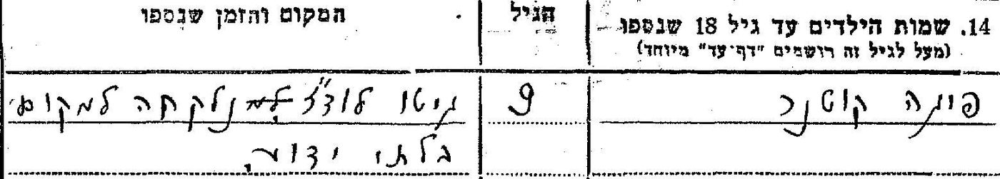
הדף אינו מציין את סדר הלידה; אבל ילדה שהייתה בת תשע כשנלקחה מהגטו (1940–1944) נולדה בין 1931 ל-1935 — אחרי אברהם, בכל אחת משנות הלידה שלו. פייגה היא, אם כן, הצעירה — כמעט ודאי — ולא אחות בוגרת. ברקע — ולא כממצא: בספטמבר 1942 גורשו מגטו לודז' הילדים שמתחת לגיל עשר; אם כך נלקחה, גם "אושוויץ" שבמפתח של יד ושם אינו סביר. "פלה/פייגה" שבעץ היא ככל הנראה היא. ברשומה המאונדקסת של יד ושם (8760277) מקום מותה "אושוויץ" — כך במפתח, לא בכתב היד; הדף עצמו אומר "למקום בלתי ידוע". באיזו שנה הייתה בת תשע — הדף אינו אומר.
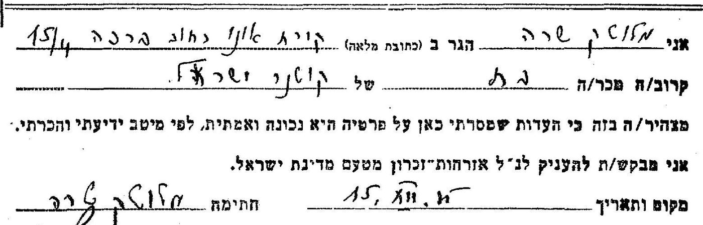
3.2 דף העד של צביה קוטנר
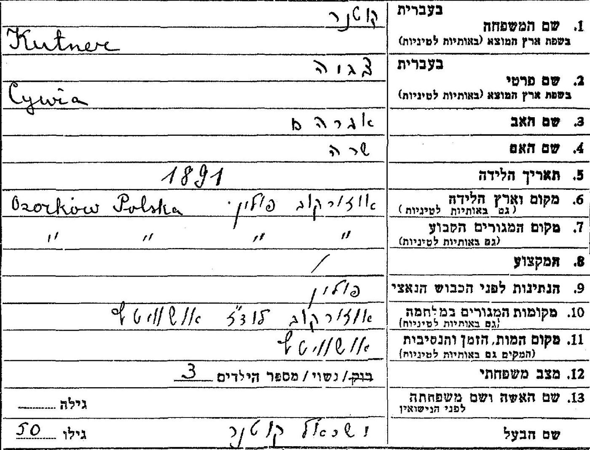
- שמות הוריה של צביה — אברהם ושרה — מאומת בדף העד, ותואם את "אברהם ושרה בנדוס" שבעץ. שם המשפחה בנדוס/Bandus — מדף העד של ישראל ומרשימת הגטו (4.1).
- שנת הלידה: 1891 בדף העד; 10.12.1895 ברשימת הגטו. אבל הגילים שבשני הדפים — צביה "בת 48", ישראל (יליד 1892) "בן 50" — מצביעים על כ-1894–1896, קרוב יותר לרשימת הגטו. אף גרסה אינה מוכרעת — טעון אימות.
- "יעקב בנדוס, נ' 1890" שבעץ — דף העד עליו נקרא:[13]
יעקב בנדוס, בן אברהם ושרה, יליד אוזורקוב — אותם הורים ואותה עיירה של צביה: אחיה — כמעט ודאי. הוא ואשתו אסתר נספו, לפי הדף, בחלמנו. אבל מרשומות גטו לודז' עולה תמונה אחרת:[23] "BANDUS, Jakub", יליד 26.6.1893, "Origin: Ozorkow", Sulzfelder Strasse 7, פרוון ואחר כך עובד במחלקת מוצרי הנייר — "Died 10/09/1943 Lodz Ghetto", מ"Tbc. pulm." (שחפת ריאות), לפי רשומות בית החולים של הגטו; ואשתו, "BANDUS, Ester Laja", ילידת 1897, מאותה דירה — בטרנספורט לחלמנו ב-12.7.1944. כלומר: יעקב מת בגטו, ואסתר נשלחה לחלמנו — ככל הנראה (השם, העיירה ושם האישה תואמים; שנת הלידה — 1893 מול 1890; שמות ההורים אינם ברשומות הגטו). הממלא, מרדכי מלוטק מקריית אונו, הוא ככל הנראה בעלה של שרה — ככל הנראה: אותו שם כבעץ, ואותה עיר שבה גרה שרה כשמילאה את דפיה.
3.3 שרה מלוטק
בארכיון ארולסן, בתיקים האישיים של אסירות מחנה בוכנוולד — Sala Kutner:[9]
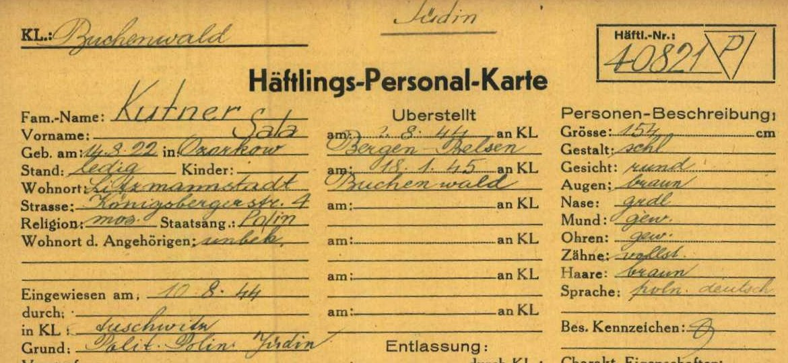
- הכרטיס — מאומת. שזו שרה, אחותו — כמעט ודאי: אותה כתובת בגטו של אברהם ושל הוריהם, עיר הלידה, ויום הלידה 14 באוגוסט — כבעץ (שם 1923; כאן 1922). Sala הוא הכינוי הפולני של שרה.
- וברשימת תושבי הגטו — «KUTNER, Sala · 14/08/1922 · Origin: Ozorkow · Konigsberger Strasse 4 Flat 35 · 26/08/1942 · Schneiderin» — קוטנר, סלה · 14.8.1922 · מוצא: אוזורקוב · רחוב קניגסברג 4, דירה 35 · 26.8.1942 · תופרת. אותו תאריך לידה בדיוק שבכרטיס בוכנוולד, אותה דירה של הוריה ושל אברהם, "תופרת" (4.1).[14] הרשומה — מאומת כאינדקס; שזו שרה — כמעט ודאי.
- היא הגיעה לאושוויץ ב-10.8.1944, אברהם — ב-22.8.1944; משם נפרדו דרכיהם.
ביד ושם רשומה גם שרה מלוטק (קוטנר) כמי ש"בחיים אחרי המלחמה", בת ישראל וצביה לבית בנדוס (17547601) — רשומת אינדקס שלא נקראה בסריקה.[4] היא ממלאת שני דפי העד, מקריית אונו — מאומת. תאריך הפטירה שבעץ (29.8.2009) — טעון אימות; בעלה, מרדכי מלוטק — ככל הנראה (להלן). ברשימת הגטו של לודז' יש גם "Sura Bajla Kutner", ילידת 15.7.1923, מאוזורקוב, ברחוב פיש 10 (4552609) — לא בדירת המשפחה; אחרי שנמצאה שורתה של Sala, היא ככל הנראה אישה אחרת — לא זוהתה.
שרה בארץ, 1946–1949. בעיתונות העברית:[24] ב"דבר", 1.3.1946, בטור "הודעות ומתבקשים": "סלה קוטנר מאוזורקוב (פולין) מחפשת את סימה קורמן מפלונסק. לפנות קיבוץ 'גשר' לסלה קוטנר"; וב"לקרוב ולרחוק", 16.5.1946, ברשימת המדור לחיפוש קרובים שליד הסוכנות: "קורמן סימה, מפלונסק (בת אחיה שרה קוטנר מאוזורקוב)", תיק 30054. "סלה קוטנר מאוזורקוב" — ככל הנראה שרה (בארולסן יש עוד Sala Kutner, ילידת 1920, מרשימות לודז'); אם כן — באביב 1946 הייתה בארץ, בקיבוץ גשר. וסימה קורמן — לפי הרשימה, אחות אביה: דודה שאינה בעץ — אפשר ש… (טעון אימות). איך הגיעה: באונייה "אנצו סירני", שהגיעה לחיפה בינואר 1946, היו שתי "שרה קוטנר", בנות 22 ו-23 ("הבקר", 24.1.1946); שרה הייתה אז בת 23 — אפשר ש…. ו"הצופה", 9.5.1949, ברשימת הנרשמים לנישואין ברבנות הראשית בחיפה: "מרדכי מלוטק, חיפה", ומיד אחריו "שרה קוטנר, חיפה" — ככל הנראה זוג, כמו השמות שלפניהם ואחריהם (סדר השמות בפענוח; תמונת העמוד נעולה). הנישואין למרדכי מלוטק — ככל הנראה, במאי 1949 בערך.
4. המלחמה — לודז', אושוויץ, מאוטהאוזן
4.1 גטו לודז'
רשימות תושבי גטו לודז' מופיעות בשני אינדקסים: במאגר השמות של יד ושם,[4] וב-"Lodz Ghetto List" של JewishGen — שם נקראו, ב-20.10.2026, כל 303 השורות של שם המשפחה Kutner וכתיביו.[14] בדירה 35 ברחוב קניגסברג 4 — ארבע שורות, ואחריהן — שורה מוקדמת יותר של אברהם:
| שם | לידה | מוצא / כתובת קודמת | כתובת בגטו | תאריך רישום | מקצוע |
|---|---|---|---|---|---|
| Kutner, Izrael | 18.9.1897 | "Origin: Ozorkow" | Königsberger Str. 4, דירה 35 | 26.8.1942 | Arbeiter — פועל |
| Kutner, Cywia, לבית Bandus | 10.12.1895 | "Origin: Ozorkow" | Königsberger Str. 4, דירה 35 | 26.8.1942 | Schneiderin — תופרת |
| Kutner, Sala | 14.8.1922 | "Origin: Ozorkow" | Königsberger Str. 4, דירה 35 | 26.8.1942 | Schneiderin — תופרת |
| Kutner, Abram | 15.8.1927 | לודז' · Fisch Str. 9 | Königsberger Str. 4, דירה 35 | 15.9.1942 | Schneiderlehrl. — שוליה של חייט |
| Kutner, Abraham | 15.8.1927 | לודז' | Hamburger Str. 5, דירה 3 → Fisch Str. 9 | 23.7.1942 "WYM" | Schüler — תלמיד |
- השורות — מאומת כאינדקס (הרשימה המודפסת לא נקראה; פרק 8).
- שהם המשפחה — כמעט ודאי: אברם — יום הלידה וכתובת הגטו של כרטיס מאוטהאוזן; צביה — שמה ושם נעוריה מדף העד; Sala — תאריך הלידה וכתובת הגטו של כרטיס בוכנוולד (3.3); וישראל — באותה דירה, מאותה עיירה, באותו יום עם אשתו ובתו.
- ישראל — נמצא בסבב הזה לראשונה. ברשימה הוא יליד 18.9.1897; בדף העד — 1892, "בן 50". הפער אינו מוכרע — טעון אימות; אותו פער יש גם לצביה (3.2). ברשימה — "פועל", לא סוחר התבואה של דף העד: המקצוע בגטו, לא לפני המלחמה.
- הסדר בזמן: שלושת בני המשפחה "מאוזורקוב" נרשמו בדירה ב-26.8.1942. אברהם — שבשתי שורותיו המגורים "לודז'", ולא "מאוזורקוב" — היה בגטו כבר קודם: ברחוב המבורג 5, ומ-23.7.1942 ברחוב פיש 9 ("WYM" — ככל הנראה סימון של יציאה מהכתובת); ב-15.9.1942 הצטרף אל הוריו ואחותו, ו"התלמיד" נרשם עכשיו "שוליה של חייט". מתי ואיך הגיע ללודז' לפני משפחתו — לא ידוע.
- פייגה — אינה ברשימה בכתובות המשפחה. אף אחת מחמש השורות של "Fajga Kutner" שבאינדקס אינה מאוזורקוב או בכתובות המשפחה. היחידה בגיל ילדה — ילידת 25.2.1935, Rauch Gasse 21, דירה 36, "AUSG" (הוצאה מהגטו) 15.3.1942 — לא זוהתה; ואברהם מראה שילד יכול היה להיות בגטו לפני שמשפחתו הגיעה. טעון אימות (9.4, N-9).
4.2 כרטיס האסיר ממאוטהאוזן
בארכיון ארולסן, בתיקים האישיים של אסירי מאוטהאוזן — תיק בן ארבעה מסמכים על שמו:[1]
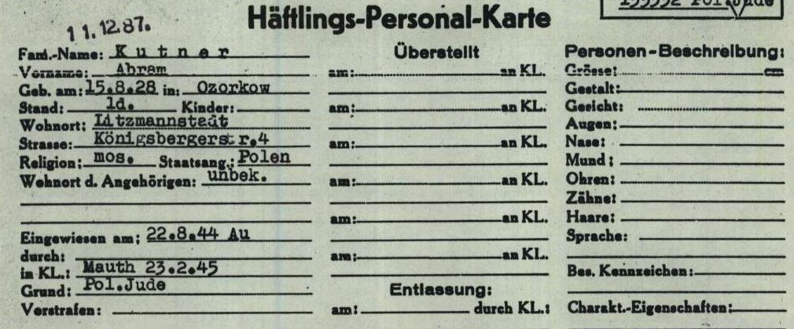
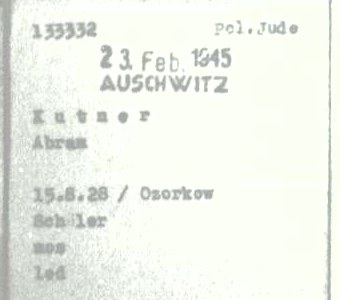
| שדה | קריאה | דירוג |
|---|---|---|
| השם | Kutner Abram | מאומת |
| הלידה | 15.8.1928, Ozorkow | מאומת (בכרטיס) |
| מקום המגורים | Litzmannstadt (לודז'), Königsbergerstr. 4 | מאומת — אותה כתובת של הוריו ושל שרה ברשימת הגטו |
| "Eingewiesen am" | 22.8.44 Au | מאומת כקריאה; הפירוש — נכנס למערכת המחנות באושוויץ ב-22.8.1944 — ככל הנראה. באותו יום הגיעה לאושוויץ רכבת מגטו לודז' (טרנספורט 544 במאגר המוזיאון): נרשמו בה רק 64 גברים (B-7697 עד B-7760), ו"Young and healthy were sent, without registration, to a transit camp in Birkenau" ("הצעירים והבריאים נשלחו, בלי רישום, למחנה מעבר בבירקנאו")[22] |
| מאוטהאוזן | 23.2.1945, אסיר 133332 | מאומת |
| מקצוע | Schüler — תלמיד | מאומת |
| הקרובים | unbek. — לא ידוע | מאומת |
| שהאסיר הוא אברהם שלנו | — | כמעט ודאי: שם, יום הלידה, עיר הלידה, וכתובת האם בגטו |
על עטיפת התיק: «KUTNER, Abram · 15.8.1928 · Ozorkow · 133332 · T/D Nr. 360426» — מספר תיק איתור (T/D) בשירות האיתור הבין-לאומי בארולסן. בקטלוג של ארולסן התיק הזה רשום: «KUTNER, ABRAM, born 15.08.1930 or 15.08.1928» — אחד-עשר מסמכים מהשנים 1954–1995, שאינם סרוקים.[1] שתי שנות הלידה של המסמכים — 1928 של המחנה ו-1930 של קפריסין וצאלים — באותו תיק איתור: מי שפתח אותו חיבר בין אסיר מאוטהאוזן לבין האיש שחי בישראל. זה מחזק את הזיהוי — כמעט ודאי. מי ביקש, ומה נשלח לו — רק קריאת התיק תגיד (פרק 8). על הכרטיס האישי חותמת תאריך «11.12.87» — אחרי מותו; ככל הנראה קשורה בטיפול בתיק האיתור — טעון אימות. במסמך השלישי (Häftlingskarte) רוב השדות ריקים, וחותמת בעמודת ההעברה אינה קריאה.
מה אין בתיק: העברה ממאוטהאוזן למחנה-בת, שחרור, או מוות. ארולסן לא החזיר עליו כרטיס עקורים (DP) או טופס IRO (9.4). כיצד שרד את 1945 — לא ידוע.
4.3 סלווינו
Sciesopoli — בית ההבראה בסלווינו, בהרי ברגמו, ששימש מסוף 1945 בית ליתומים יהודים ניצולי השואה — מקיים אתר זיכרון ובו שתי רשימות:[8]
- "רשימת ילדי סלווינו (בעבודה)" — רשימה מצטברת שהאתר מתקן לפי פניות: «347. Kutner Avraham (Abram) (1930 – PL)». וברשימה, מס' 36: «Balem (Balam) poi Kutner Zipora (1931 – Lubomjl, PL)» — "בלם (בלאם), לימים קוטנר, צפורה".
- "רשימה קצרה של ילדי סלווינו" — לפי האתר, מבוססת על ספרו של אהרן מגד על בית סלווינו, ומתארת את עיסוקם של הילדים "בשנת 1984 בקירוב". על אברהם קוטנר, בתמצית: גורש לאושוויץ, ועבר את «the "death march" up to Saxenhausen» ("צעדת המוות" עד זקסנהאוזן); מילא תפקיד אחראי בכור הגרעיני בדימונה; נולד ב-15 באוגוסט 1930 ונפטר במרץ 1986 (התאריכים — ככל הנראה תוספת של עורכי האתר: הספר קדם למותו); היה המזכיר הראשון של קיבוץ צאלים, ושם נשא את צפורה בלם, גם היא מילדי סלווינו.
הדירוג: ככל הנראה — מקור משני (אתר, המצטט ספר שלא נקרא), שאינו מציין מאין המידע. שזה אברהם שלנו — כמעט ודאי: 15 באוגוסט, צאלים, צפורה בלם, ומרץ 1986 — כולם תואמים את העץ ואת המסמכים. מה שהוא מוסיף: סלווינו, דימונה, מזכיר צאלים, וזקסנהאוזן.
ההספד, 1988. בחוברת "לזכרם" שהוציאו בוגרי סלווינו ב-1988 — שמורה בארכיון מסואה — עמוד וחצי על "אברהם קוטנר", בחתימת שמוליק שילה (שולמן), חבר מקבוצת סלווינו:[20] "אברמק — בפי כולנו", "מרכז המשק הראשון של צאלים", שהניח את יסודותיו — גזבר, ובנאי שיצק את הבתים הראשונים. לפי ההספד: נולד באוזורקוב ועבר את הגטו; באושוויץ איבד את הוריו; "המספר חקוק על ידו עד יומו האחרון"; ובמפגשים החברתיים התכופים בבית אחד החברים סיפר על הגטו, על אושוויץ ועל צעדת המוות. לקפריסין הגיע "באונית המעפילים 'חיים ארלוזורוב'", ומשם — ישר לקיבוץ כפר רופין, בעליית הנוער; עם הקבוצה — לנח"ל, ומן הנח"ל — לצאלים. מותו בא לפתע: הוא נשא בלבו מחלה, ולא סיפר עליה גם לחבריו הקרובים. צפורה ("ציפקה") נותרה עם שני ילדים, כבר נשואים; ונולדה נכדה, שאברמק לא זכה לראות — ככל הנראה טל, שנולדה במרץ 1987, שנה אחרי מותו (לפי העץ המשפחתי; ההספד אינו נוקב בשמה). — מאומת כעדות: הספד של חבר, בלי תאריכים. מה שהוא מוסיף על המסמכים: מרכז המשק, כפר רופין ועליית הנוער, הנח"ל, מחלת הלב, והמספר על הזרוע — אם אכן נשא מספר מאושוויץ, הוא היה בין המעטים שנרשמו שם (4.2).
באיטליה, 1946. במאגר של הקונגרס היהודי העולמי שב-JewishGen — "רשימת הפליטים היהודים באיטליה, מס' 2, 1946" (סדרה D51.9.c, עמ' 59): "KUTNER, Abram · Ozorkow · 1930 · Polish · Father's name: Israel, Mother's name: Cywja" (קוטנר, אברם · אוזורקוב · 1930 · אזרחות פולנית · שם האב: ישראל; שם האם: צביה).[21] השם, העיירה, שנת הלידה כפי שמסר אחרי המלחמה, ושמות שני ההורים — כמו בדפי העד (פרק 3). זה המסמך הראשון בן-הזמן מתקופת איטליה. הדירוג: ככל הנראה — שורת אינדקס; הרשימה המקורית לא נראתה.
ובארץ חיפשו אותו? "הבקר", 20.1.1947, בטור "מתבקשים": "אברהם קיטנר מארזי. מתבקש על ידי קרוביו בחו"ל. פרטים אצל: שדמן, תל־אביב, רחוב התחנה 7".[24] אם "קיטנר" הוא קוטנר — כמו ב-1952 (5.2) — ו"מארזי" שיבוש של "מאוזורקוב", זה הוא, חודש לפני ההפלגה ב"חיים ארלוזורוב"; אפשר ש… (טעון אימות).
"צעדת מוות עד זקסנהאוזן" וכרטיס האסיר ("מאוטהאוזן 23.2.45, מאושוויץ") אינם בהכרח סותרים — ייתכן שעבר בדרכו יותר ממחנה אחד — אבל אף מסמך שנקרא אינו מראה אותו בזקסנהאוזן. צעדת המוות עצמה — גם בהספד מ-1988 ("מצעד המוות"); זקסנהאוזן — לא שם. נשאר טעון אימות.
5. קפריסין וצאלים
5.1 רשימת קפריסין, 1947
ב-IGRA, מתוך תיק הארכיון הציוני המרכזי 56/4315 (עמ' 3275), רשימה של עצורי מחנות קפריסין שהועברו לארץ — לפי תיאור המאגר, "המכסה השנייה של ילדים יתומים", 1947:[5]
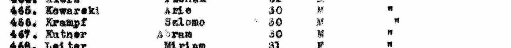
- העמודה השלישית היא שנת לידה (בשורות אחרות "11.29", "10.29") — כלומר "Abram Kutner, יליד 1930" — כמעט ודאי. בעמוד אין כותרת, תאריך או שם אונייה בראש: "המכסה השנייה של ילדים יתומים" ו-1947 — מתיאור המאגר ב-IGRA.
- העמודה האחרונה מחליפה ערכים לאורך העמוד: "Mordey Hagetaoth", "Ch. Arlozorof", "Hamaapil Haalmoni" — שמות אוניות מעפילים. "Ch. Arlozorof" היא אוניית המעפילים "חיים ארלוזורוב" — כמעט ודאי: הכותרת של הרשימה אינה בעמוד, אבל אברהם וצפורה שניהם ברשימת מעפילי "חיים ארלוזורוב" שבעיתון (להלן). לפי אתר תיעוד ההעפלה של משפחת ורטהיימר, המסתמך על ספרו של פול סילברסטון על אוניות המעפילים, האונייה העלתה מעפילים בטרלבורג שבשוודיה ובמטפונטו שבאיטליה, נתפסה ב-27.2.1947, עלתה על שרטון מול בת גלים בחיפה ב-28.2.1947, ומעפיליה הועברו לקפריסין.[10] איפה עלה אליה אברהם — לא ידוע; ילדי סלווינו, שבאיטליה, עלו, ככל הנראה, במטפונטו — טעון אימות.
- מתי יצאה "המכסה השנייה של ילדים יתומים" מקפריסין — לפי עדות הווידאו של אסתר ורבר-וסרשטרום, מקבוצת ילדי סלווינו שעלתה באותה אונייה ("אולווא", ש"הפכה להיות … חיים ארלוזורוב"): "חצי שנה" בקפריסין, "בספטמבר ארבעים ושבע" ארצה, ו"ביום כיפור" בעתלית — 25.9.1947; ומשם — כפר רופין.[18] שאברהם היה באותה קבוצה — ככל הנראה: צפורה מעידה שבעלה היה "מאותה קבוצה" (פרק 2).
- לצפורה, הזיהוי באותה רשימה כמעט ודאי — שם משפחה נדיר, ושנת הלידה כמו בכרטיס שלה מאיטליה; לאברהם — עכשיו גם כן כמעט ודאי: שמו נפוץ יותר, אבל רשימת המעפילים בעיתון מוסיפה את עירו, אוזורקוב.
- שזה אברהם — כמעט ודאי: שם ושם משפחה, ושנת לידה מוקטנת בשנתיים — ראו פרק 6; אותה שנה, 1930, בפנקס צאלים (5.2); ועיר ההולדה — ברשימה שבעיתון (להלן).
רשימת המעפילים בעיתון, 24.3.1947. "לקרוב ולרחוק" — עיתון שפרסם רשימות ניצולים ומעפילים לחיפוש קרובים — הדפיס "רשימה של 1084 שמות" ממעפילי "חיים ארלוזורוב" (לשעבר "אולואה"; 1,398 מעפילים), שגורשו לקפריסין; בכל שורה — שם, גיל ועיר או ארץ המוצא. בעמוד השני: "קוטנר אברהם, 16, אוזורקוב"; ובעמוד הראשון: "באלן צפורה, 16, לובומיל".[19] אוזורקוב — עיר הולדתו של אברהם, ולובומל — עירה של צפורה (המחקר עליה). הרשימה — מאומת כטקסט (פענוח אוטומטי; תמונת העמוד לא נראתה); שאלה הם — כמעט ודאי: שם, שם משפחה ועיר. הגיל — 16, ולא 18: גם כאן הוקטן. ומכאן גם: "Ch. Arlozorof" ברשימת קפריסין הוא אכן "חיים ארלוזורוב" — שתי הרשימות מתיישבות.
באותו עמוד, שורה 452: "Balem · Cypora · 31 · F" — באותה עמודת אונייה. צפורה בלם, אשתו לעתיד, ילידת 1932 לפי העץ ולפי פנקס צאלים; האם היא "Cypora Balem" זו — נבחן במחקר עליה.
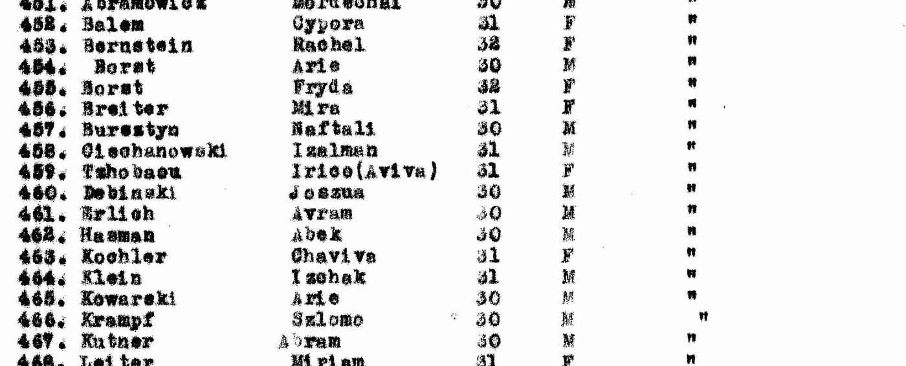
5.2 פנקס הבוחרים של צאלים, 1952
המועצה האזורית "חבל מעון", הנגב המערבי — "פנקס הבוחרים — קיבוץ צאלים", עמ' 19:[6]
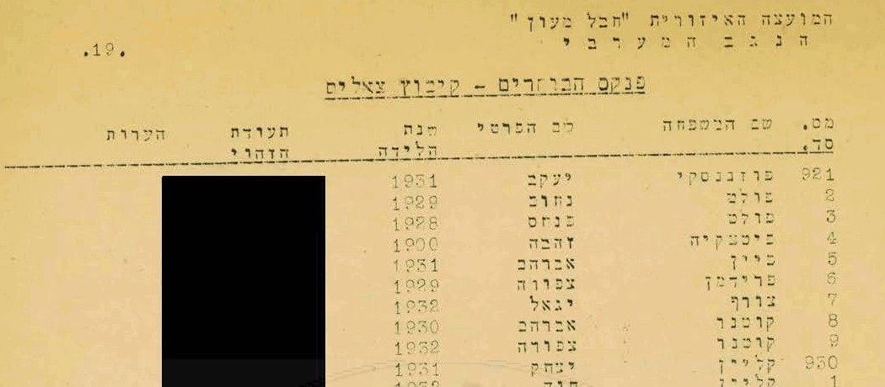
- אברהם קוטנר, יליד 1930, חבר קיבוץ צאלים ב-1952 — מאומת (ברשומה); שזה אברהם שלנו — כמעט ודאי: אשתו בשמה ובשנת לידתה בשורה הבאה, והמקום — צאלים, שבו נולדו ילדיהם לפי העץ.
- השנה (1952) וסוג הבחירות — מתיאור המאגר ב-IGRA; אינם כתובים בעמוד.
- צפורה כבר נושאת את השם קוטנר ב-1952 — כלומר נישאו (או נרשמו כזוג) לפני כן — ככל הנראה. לפי בתם, נישאו ברבנות בבאר שבע (פרק 2); ו"הצופה" פרסם ב-18.3.1952, ברשימת "הרשומים לנישואין", "במשרד הרבנות בבאר שבע": "אברהם קיטנר, צאלים, רווק" ו"צפורה בלם, צאלים, רווקה" — מיד אחרי זוג נוסף מצאלים.[24] השורה — מאומת כטקסט (פענוח; תמונת העמוד נעולה); שאלה הם — כמעט ודאי: אברהם וצפורה בלם, שניהם מצאלים ושניהם רווקים, ברבנות שבה נישאו, לפי בתם; "קיטנר" — כך הודפס או פוענח שם המשפחה. כלומר: נרשמו לנישואין במרץ 1952 בערך; יום החתונה עצמו — לא נמצא.
5.3 הקבורה, באר שבע
בבית העלמין הישן של באר שבע — מצבה משותפת לאברהם ולצפורה, שצילם מתנדב של BillionGraves ותעתק.[12] אותם שני קברים, באותם תאריכים עבריים ובאותם גילים, רשומים גם במרשם הקבורה של JewishGen (JOWBR) — "Be'er Sheva Old Cemetery".[15] בתעתיק:
| שדה | אברהם | צפורה |
|---|---|---|
| נפטר/ה | 19.3.1986 · ח' באדר ב' תשמ"ו | 28.1.2006 · כ"ח בטבת תשס"ו |
| גיל | 57 | 73 |
| ההורים | ישראל וציביה | מנדל בלם וזלדה-סוניה |
ובמצבה, הקדשה: «לזכר הוריהם ובני משפחתם שנספו בשואה».
- התעתיק — כמעט ודאי: תעתיק של מתנדב, והתצלום המלא אינו פתוח לעיון חינם. שזו מצבתם — כמעט ודאי: שני השמות, ארבעת ההורים בשמותיהם מדפי העד, באר שבע; את התצלום עצמו לא ראינו. ששתי הרשומות הן מצבה אחת משותפת — כמעט ודאי: אותם ארבעה הורים, אותה הקדשה, אותן רשומות סמוכות.
- תאריך הפטירה: ח' באדר ב' תשמ"ו התחיל בערב 18.3.1986 ונמשך עד ערב 19.3. בתו מוסרת: 19 במרץ 1986 (פרק 2) — ששעות היום שלו חלו בח' באדר ב'. התאריך — כמעט ודאי: עדות המשפחה ותאריך המצבה מתיישבים; ה-19.3 שבתעתיק וב-JOWBR הוא המרה של המתעתקים, לא מקור נוסף.
- הגיל, 57 במרץ 1986, מתאים ללידה ב-1928 — ככל הנראה (גיל על מצבה הוא מה שהמשפחה מסרה) (פרק 6).
6. שנת הלידה — שלוש גרסאות
| המקור | שנה | יום וחודש |
|---|---|---|
| רשימת תושבי גטו לודז' (4.1) | 1927 | 15.8 |
| כרטיס האסיר, מאוטהאוזן 1945 (4.2) | 1928 | 15.8 |
| עץ המשפחה (פרק 2) | 1928 ("סביבות") | 15.8 |
| רשימת קפריסין 1947 (5.1) | 1930 | — |
| פנקס צאלים 1952 (5.2) | 1930 | — |
| רשימות סלווינו באתר הזיכרון (4.3) | 1930 | 15.8 (עורכי האתר) |
| המצבה, באר שבע 1986 (5.3) | בן 57 ← 1928 | — |
יום הלידה, 15 באוגוסט, עקבי בכל מקום שבו הוא נרשם. השנה זזה: 1927 בגטו — שם נער מבוגר יותר נחשב כשיר לעבודה; 1928 בכרטיס המחנה ובזיכרון המשפחה; 1930 מקפריסין והלאה — שם "מכסת ילדים יתומים" הייתה פתוחה לצעירים. ההסבר הזה — שינוי מכוון של הגיל בכל פעם לכיוון שהיטיב עם הנער — השערה, טעון אימות; אינה נשענת על מסמך. המצבה — "בן 57" במרץ 1986 — חוזרת ל-1928: ככל הנראה המשפחה ידעה את השנה האמיתית, גם כשהרישום הישראלי נשא 1930. שנת הלידה בתעודת הזהות — לא נבדקה (פרק 8).
7. עץ המשפחה
העץ מוצג בתרשים במקטע העץ. בטקסט:
- צבי (הרש) וחיה קוטנר — הוריו של ישראל (דף העד) — מאומת בדף העד; לא ידוע עליהם יותר.
- אברהם ושרה בנדוס — הוריה של צביה (דף העד) — מאומת בדף העד.
- ישראל קוטנר — 1892 (דף העד) / 18.9.1897 (רשימת הגטו), סטריקוב; סוחר תבואה באוזורקוב; גטו לודז', קניגסברג 4, מ-26.8.1942; נספה באושוויץ (דף העד).
- צביה (Cywia) קוטנר לבית בנדוס — 1891 (דף העד) / 10.12.1895 (רשימת הגטו), אוזורקוב; גטו לודז', קניגסברג 4, מ-26.8.1942; נספתה באושוויץ (דף העד).
- שרה (Sala) מלוטק לבית קוטנר — 14.8.1922 (1923 בעץ), אוזורקוב; גטו לודז', קניגסברג 4, מ-26.8.1942; אושוויץ 10.8.1944, ברגן-בלזן, בוכנוולד 18.1.1945, אסירה 40821; שרדה; קריית אונו (דפי העד). נפטרה 2009 — לפי העץ, טעון אימות; בארץ מ-1946 ונישאה למרדכי מלוטק ב-1949 — ככל הנראה (3.3).
- אברהם (אברמק) קוטנר — 15.8.1928 (1927 בגטו, 1930 בישראל), אוזורקוב — 19.3.1986 (ח' באדר ב' תשמ"ו), באר שבע. גטו לודז', קניגסברג 4, מ-15.9.1942; סלווינו; צאלים; דימונה.
- פייגה קוטנר — בת 9, נלקחה מגטו לודז' "למקום בלתי ידוע" (דף העד).
- אשתו: צפורה לבית בלם — 1932 (1931 ברשימות שאחרי המלחמה), לובומל — 2006 — מחקר נפרד.
8. פעולות פתוחות
| # | פעולה | מה זה ישנה | מי |
|---|---|---|---|
| 1 | שנת הלידה בתעודת הזהות — פרטי הקבורה ידועים (5.3) | 1928 או 1930, כפי שנרשמה בישראל | משפחה |
| 2 | 1945–1947: מאוטהאוזן → סלווינו → קפריסין | רשימות המשוחררים של מאוטהאוזן; כרטיס הילד בסלווינו (OSE / ג'וינט / IRO איטליה); רישום עליית ב' של "חיים ארלוזורוב" | ארולסן (3) והארכיון הציוני — נשלחה בקשה, 20.10.2026 |
| 2ב | "דבר", 21.10.1953 — בחירות להנהלת קבוצה של איחוד הקבוצות והקיבוצים: "אברהם קוטנר" בין הנבחרים, לצד מאיר בן שושן, ישעיהו להב, שמואל שילם, שושנה הרש ופנחס ונטורה; שם הקבוצה אבד בפענוח[19] | אם זו צאלים — אברהם בהנהלת הקיבוץ ב-1953; מתיישב עם "המזכיר הראשון" | תמונת העמוד (JPress); פנקס צאלים 1952 — האם השמות האחרים בו |
| 2א | ספרו של אהרן מגד על ילדי סלווינו | הקטע על אברהם במקור — ומאין לקח מגד את פרטיו | ספרייה |
| 2ו | כור דימונה; מזכירות צאלים | תאריכים; תצלומים; ארכיון הקיבוץ | משפחה / ארכיון צאלים |
| 2ז | תיק הנישואין ברבנות באר שבע, 1952 | יום החתונה, העדים, ומה מסרו על הוריהם ועל מקום לידתם (5.2) | הרבנות הראשית; ארכיון המדינה |
| 2ג | השאלון האישי של ארגון יוצאי סלווינו — "קוטנר אברהם, יליד 1930, אוזורקוב" (מסואה, 120254; אין סריקה מקוונת) | מה כתב אברהם עצמו על הגטו, אושוויץ, המחנות וסלווינו | בקשת העתק ממסואה — הרשומה |
| 2ד | מוזיאון אושוויץ — המספר על זרועו | אם נרשם במחנה ב-22.8.1944 (B-7697 עד B-7760), או אחר כך — מספרו ומסלולו עד מאוטהאוזן (4.2) | ארכיון המוזיאון, בדוא"ל |
| 2ה | הרשימה המקורית של הפליטים היהודים באיטליה, 1946 (הקונגרס היהודי העולמי, D51.9.c, עמ' 59) | הדף עצמו, ושכניו ברשימה — אולי עוד ילדי סלווינו (4.3) | ארכיון הקונגרס היהודי העולמי (American Jewish Archives) |
| 3 | תיק T/D 360426 בארולסן — 11 מסמכים, 1954–1995, לא סרוקים | מי פתח את האיתור ולמה; ייתכן גם כרטיסי עקורים, ויישוב שנת הלידה | ארולסן — נשלחה בקשה, 20.10.2026 (זמן מענה: עד 13 חודשים) |
| 3ב | תיק T/D 392622 של שרה (Sala) בארולסן | איפה ומתי שוחררה, תקופת העקורים והדרך לארץ (3.3) | ארולסן — נשלחה בקשה, 20.10.2026 (זמן מענה: עד 13 חודשים) |
| 3ג | תיק 30054 של המדור לחיפוש קרובים (הסוכנות, 1946) — שרה קוטנר וסימה קורמן מפלונסק | מי הייתה סימה קורמן; מתי ואיך הגיעה שרה (3.3) | הארכיון הציוני המרכזי |
| 3א | JewishGen — מאגרי הפירוט | נקראו, 20.10.2026: רשימת גטו לודז' — ישראל ושרה בדירת המשפחה (4.1); JOWBR — הקבר בבאר שבע (5.3); טראונשטיין — אדם אחר (N-10) | — |
| 4 | תצלומים ומסמכים במשפחה | תצלום של אברהם; תעודות מצאלים | משפחה |
| 5 | רשימת הגטו של לודז' — הספר המודפס | קריאת השורות עצמן — גם של ישראל ושל שרה (4.1) | יד ושם — נשלחה בקשה, 20.10.2026 |
| 6 | הנישואין לצפורה | נישאו ברבנות בבאר שבע (לפי בתם); המועד — לא ידוע | רבנות באר שבע / ארכיון צאלים |
| 7 | יעקב בנדוס (720638) — אחיה של צביה | נקרא (3.2) | — |
| 8 | עדויות וידאו מאוזורקוב — בארכיון קרן השואה של USC רשומות 47 עדויות שמתויגות "גטו אוזורקוב" (חיפוש לפי מקום, 20.10.2026); ובחיפוש שם "Bandus" — עדות אחת, 10518: ניצול יליד לודז' 1915, שאמו רייזה לבית בנדוס ודודו יחיאל מאיר בנדוס | ניצולים מאותו גטו ומאותה דרך (אוזורקוב — לודז' 1942 — אושוויץ); והאם משפחת בנדוס של לודז' קרובה לצביה — טעון אימות (שמות האחים הידועים של צביה: יעקב ושימק) | צפייה בעדויות (VHA, בהרשמה) |
9. שיטה ומגבלות
9.1 בסיס הראיות
אתר הזיכרון של בית סלווינו (מקור משני); כרטיסי המחנה ממאוטהאוזן בארכיון ארולסן (מקור ראשוני בן-זמנו, סריקות שנקראו); שני דפי עד שמילאה אחותו בשנות החמישים (מקור ראשוני מאוחר — עדות בכתב יד); רשימת עצורי קפריסין ופנקס בוחרים מ-1952 (מקורות ראשוניים, סריקות IGRA שנקראו); ומאגר השמות של יד ושם ומאגר הגטו של JewishGen (שני אינדקסים של רשימות הגטו, לא נקראו בסריקה); ומה שמסרה בתו (עדות משפחתית). עץ MyHeritage של המשפחה הוא נקודת המוצא בלבד.
9.2 סולם הוודאות
מאומת — נקרא ישירות מהמסמך; כמעט ודאי — מסמכים מתכנסים ללא סתירה; ככל הנראה — פרשנות סבירה או זיהוי נסיבתי; טעון אימות — לא פוענח או לא נבדק. המסמך מדורג בנפרד מן הזיהוי שנשען עליו: דף עד הוא מאומת כעדות, ומה שבו — עדות של בת על אביה.
9.3 מוסכמות הכתיב
קוטנר · Kutner · Kotner — אותו שם; במסמכי המלחמה ובקפריסין Kutner, בישראל קוטנר; ובאנגלית, כפי שהמשפחה כותבת אותו — Kutner. אברם · Abram · Abraham · אברהם · אברמק. צביה · Cywia · Tzvia. בנדוס · Bandus. אוזורקוב · Ozorków · Ozorkow; לודז' · Litzmannstadt (השם הגרמני בזמן הכיבוש).
9.4 ממצאים שליליים
| # | שאלה | מקור וכיסוי | תוצאה | דירוג |
|---|---|---|---|---|
| N-1 | כרטיס עקורים, CM/1 או IRO לאברם קוטנר | ארולסן, 20.10.2026: Kotner / Kottner / Kotnar / Kotnier / Cutner — אפס; Kutner — כל 2,194 הרשומות; וריאנטים Kuttner, Awram, Avram, Abramek | רק תיק מאוטהאוזן (ותיק האיתור T/D 360426, לא סרוק) | ככל הנראה — אינדקס שמות בלבד |
| N-2 | אברם קוטנר באושוויץ | מאגר מוזיאון אושוויץ, Kutner Abram / Avraham, Kotner Avraham | אפס — רוב יהודי לודז' שהגיעו באוגוסט 1944 לא נרשמו במספר | אינו שלילה |
| N-3 | ג'וינט — עקורים, הגירה | JDC Names, Kutner (התאמה מדויקת) — 47; Kotner / Kocner / Kutner + Ozorkow — אפס | אין אברם 1928/1930 | ככל הנראה |
| N-4 | נישואי ישראל וצביה, לידת אברם | JRI-Poland, אוזורקוב, Kotner/Kutner | אין | ככל הנראה — כיסוי האינדקס לשנות ה-20 חלקי |
| N-5 | מודעת אבל, מרץ 1986 | JPress, "קוטנר", 1.3–30.4.1986 — 48 תוצאות, אף אחת אינה מודעה עליו (היומן) | אין | פער כיסוי, לא שלילה: ב-JPress אין "מעריב" ממרץ 1986, ואין "דבר" ו"הארץ" מ-1986 כלל |
| N-6 | רשימות העולים, Pinpoint | "Kutner Abram", "קוטנר אברם/אברהם"; שני תיקי "מעפילים — Haim Arlosoroff 1947" (טפסי משטרה) נקראו רק בחלקם — חלק מהעמודים לא נפתחו | רעש OCR בלבד | לא הוכרע — כיסוי חלקי |
| N-7 | דפי עד שמילא אברהם עצמו | יד ושם, ממלא Kutner/Kotner + Avraham/Abraham — 19 דפים | כולם של משפחת קוטנר מוורשה | ככל הנראה — לא הוא |
| N-8 | דפי עד של שרה על דודיה רבקה, פייגה ופישל קוטנר | יד ושם, ממלאת Mlotek + Sara / Sura / Mlotek-Kutner | אין — רק דפי ההורים, פייגה, ודף אחד נוסף (737334) שלא זוהה | ככל הנראה (לפי המפתח) |
| N-9 | פייגה ברשימת גטו לודז' | JewishGen, Lodz Ghetto List — כל 303 השורות של Kutner (וכתיביו); חמש שורות "Fajga" (ילידות 1884, 1897, 1899, 1924, 1935) | אף אחת אינה מאוזורקוב או בכתובות המשפחה; היחידה בגיל ילדה — ילידת 25.2.1935, Rauch Gasse 21/36, "AUSG" 15.3.1942 — לא זוהתה | טעון אימות — ייתכן שנרשמה בשם אחר, שלא נרשמה, או שהיא השורה מ-1935 |
| N-10 | אברם קוטנר במחנה העקורים טראונשטיין | JewishGen, Traunstein Displaced Persons — 9 שורות של Kutner | "Abram Kutner" שם הוא תינוק, יליד 5.8.1946 בשצ'צ'ין, עם יעקב ובלה קוטנר | נשלל |
| N-11 | מאגרים נוספים של JewishGen | בית החולים של גטו לודז' (12 שורות), כרך 5 של רשימות הגטו (22), משלוחי לודז' לחלמנו (17) | אין ישראל, צביה, שרה, אברם 1927/28 או פייגה | ככל הנראה |
| N-12 | עדות של אברהם או של שרה ביד ושם | קטלוג העדויות: "קוטנר אברהם" — 19 תוצאות, אף אחת אינה שלו; "Mlotek Sara Ozorkow", "מלוטק שרה" — אפס | אין | ככל הנראה — חיפוש בקטלוג בלבד |
| N-13 | אברהם וצפורה בצאלים, ינואר 1949 | ארכיון המדינה, רשימת בעלי זכות הבחירה לאספה המכוננת, כרך 7 (000z1yq, גל-45497/6), קלפי 17 — "ברחובות — צאלים", עמ' 233–236 בקובץ, כ-120 שמות; וכרך 8 (000z1yr) — צאלים רק בתוכן העניינים | אין קוטנר, ואין בלם / בלאם / באלם — רק חברי הגרעין המייסד | ככל הנראה — בינואר 1949 הם עוד לא היו רשומים בצאלים; מתיישב עם תיאור עדותה של צפורה: צבא, ואחר כך צאלים |
| N-14 | עדות וידאו של אברהם או של בני משפחתו בארכיון קרן השואה של USC | VHA (vha.usc.edu, ללא התחברות), חיפוש שמות "Kutner" — 18 עדויות; ואינדקס המרואיינים של JewishGen (USCINTERV, 173 שורות של Kutner), 20.10.2026 | אין עדות שלו או של שרה. שני מועמדים נבדקו ונשללו: אריה קוטנר (נ' 4.12.1924; עדות 12451/12533) — אביו ישראל (1892) ואחיו אברהם (1927), אבל אמו מאירה (1894), לא צביה; ואריה קוטנר (נ' 3.5.1925; עדות 48613) — דודו ישראל, אבל אביו וולף וסבו אריה לייב, ואביו של ישראל שלנו הוא צבי | נשלל לשני המועמדים |
| N-15 | אברם קוטנר — עוד מאגרי מחנות ועקורים | מוזיאון אושוויץ — Kutner / Kotner / Kuttner / Cutner / Kutnier / Kutnar / Bandus / Mlotek עם Abram / Israel / Izrael / Sala / Cywia / Fajga — 20 אנשים; ארולסן — "133332" (7 שורות; שתיים — הכרטיס הידוע), Kutner עם Abram / Abraham / Israel / Izrael / Sala / Cywia, ו-Bandus — 73 שורות; ג'וינט — "Kutner", חיפוש מדויק — 47 אנשים; Pinpoint — "קוטנר אברהם", "Kutner Abram / Abraham"; מסואה ובית לוחמי הגטאות — "קוטנר", "Kutner"; 27.10.2026, בחיפוש חוזר שתועד ביומן (היומן) | אין רשומה חדשה מן המחנות; בג'וינט — "630 KUTNER SARA / 631 ABRAM" ברשימת סיוע לקהילות באיטליה, 1946 — טעון אימות; בדכאו — "Kutner Izrael", 13.11.1897, לודז', מס' 96029 — יום לידה אחר משל ישראל ברשימת הגטו (18.9.1897) — טעון אימות, אינו נכנס לעץ | אינו שלילה — יהודי גטו לודז' שהגיעו באוגוסט 1944 לא נרשמו ברובם |
| N-16 | אברהם (וצפורה) בעיתונות העברית והיידית — חיפוש חוזר | JPress, 27.10.2026: "אברהם קוטנר" (16), "קוטנר אברהם" (4), "אברמק" עם קוטנר או צאלים (0), קוטנר + צאלים (9), + סלווינו / סלבינו (0), + דימונה (40), + "באר שבע" (140); ביידיש "קוטנער" + אוזורקוב (5), "אברהם קוטנער" (7); והכתיבים "קיטנר" (228) ו"קוטינר" (41) — היומן | מעבר לידוע: רישום הנישואין, 1952 (5.2); הודעת "מתבקשים", 1947 (4.3); ושרה, 1946–1949 (3.3). כל שאר "אברהם קוטנר" — אחרים: לפחות עשרה, והנימוק לכל אחד ביומן (במהדורה 5 נכתב "שמונה"); ורוב התוצאות לשם קוטנר — של שדרן הרדיו יואב קוטנר | אינו שלילה — אחרי 1993 אין עיתונים יומיים ב-JPress |
9.5 חסמים
ארכיון קיבוץ צאלים — אין לו קטלוג מקוון; ברשת ארכיוני ישראל (הספרייה הלאומית, נבדק בדפדפן 20.10.2026) כ-200 פריטים על צאלים, רובם של יד טבנקין, ואין בהם אזכור של קוטנר; הפנייה — לקיבוץ עצמו. קבורה: הרשומה ב-BillionGraves נמצאה בדפדפן (20.10.2026); התצלום המלא — בתשלום. FamilySearch — אין אסימון גישה; לא נבדק. JewishGen — עמודי הפירוט החזירו בכלי האוטומטי "0 רשומות" גם במאגרים שבהם הסקירה מנתה התאמות — תקלה, לא שלילה; ב-20.10.2026 נקראו בדפדפן, בחשבון מחובר: רשימת הגטו, JOWBR, טראונשטיין, בית החולים, כרך 5 ומשלוחי חלמנו (4.1, 5.3, N-9 עד N-11); פנקס הניצולים — לא נקרא. כרטיסי "הקו האדום" של ארולסן באינדקס של JewishGen (476 שורות לשם המשפחה) — לא נקראו אחד-אחד.
9.6 מה הדף אינו עושה
לבקשת המשפחה, הדף כולל גם את בני המשפחה החיים — ילדיו, נכדיו ונינותיו של אברהם. אינו מסתמך על עץ MyHeritage כראיה — רק כנקודת מוצא. אינו משלים את 1945–1947 מתוך ספרות כללית: מה שלא נמצא במסמך, נאמר שלא נמצא.
עץ המשפחה
הסדר מימין לשמאל — הבכורה מימין. ההורים והסבים — מדפי העד שמילאה שרה מלוטק בשנות החמישים; אברהם — כרטיס האסיר ממאוטהאוזן (1928) ופנקס צאלים (1930); פייגה — בת 9 בדף העד, שנת לידתה לא ידועה.
גלילה אופקית בתוך המסגרת מציגה את העץ במלואו, וכפתורי ההגדלה שמעליה מגדילים את הכתב; בהדפסה הוא מקבל עמוד לרוחב משלו.
פתיחת העץ בעמוד נפרד ↗מסמכי מפתח
המסמכים שעליהם נשען עיקר הדוח, בסדר שבו הם נדונים בו. לחיצה פותחת את הסריקה המלאה.
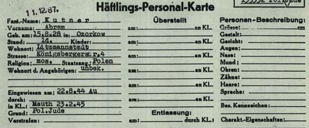
כרטיס האסיר האישי ממאוטהאוזן — קוטנר אברם, 15.8.28, אוזורקוב; הוכנס 22.8.44 מאושוויץ; מאוטהאוזן 23.2.45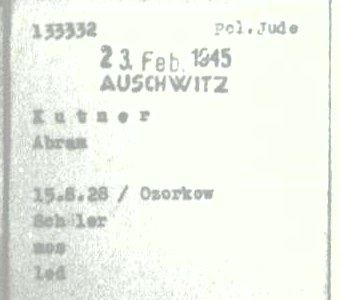
כרטיס המספר — 133332, יהודי פולני, 23 בפברואר 1945, מאושוויץ; תלמיד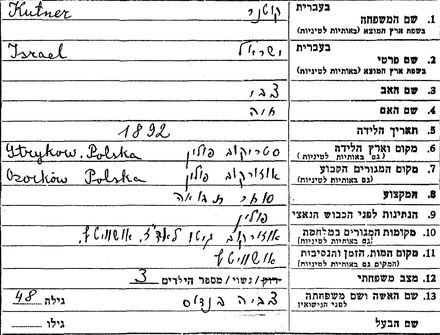
דף העד על ישראל קוטנר, שנות ה-50 — בן צבי וחיה, סטריקוב 1892, סוחר תבואה באוזורקוב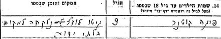
פייגה קוטנר, בת 9 — "גיטו לודז' — נלקחה למקום בלתי ידוע"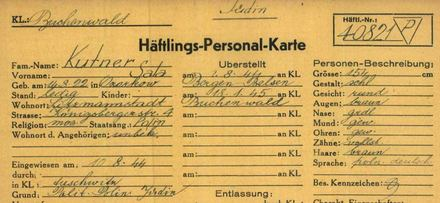
אחותו סלה (שרה) קוטנר, 14.8.22 — אושוויץ 10.8.44, ברגן-בלזן, בוכנוולד 18.1.45, אסירה 40821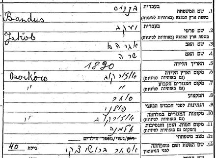
דף העד על יעקב בנדוס — בן אברהם ושרה, אוזורקוב 1890; לפי הדף — נספה בחלמנו (לפי רשומות הגטו — מת בגטו לודז', 10.9.1943). אחיה של צביהדף העד על צביה קוטנר, שנות ה-50 — בת אברהם ושרה, אוזורקוברשימת קפריסין, 1947 — 452 Balem Cypora 1931 ו-467 Kutner Abram 1930, אונייה "Ch. Arlozorof" פנקס הבוחרים של קיבוץ צאלים, 1952 — קוטנר אברהם 1930, קוטנר צפורה 1932
פנקס הבוחרים של קיבוץ צאלים, 1952 — קוטנר אברהם 1930, קוטנר צפורה 1932אינדקס האנשים
בני המשפחה המרכזיים בדוח, עם קישור אל הפרק שבו כל אחד נדון; העץ מציג את כולם. שדה החיפוש שבראש העמוד מחפש גם בכתיבים החלופיים של השמות.
אינדקס המקורות
רשימת מקורות
לכל ערך: מהות המקור ומעמדו, ההפניה החיצונית למסמך המקורי, העותק המקומי השמור בתיקיית המחקר, ומה בדיוק הוא מוכיח. "עותק מקומי" פירושו עותק של המסמך עצמו. כל המקורות נצפו באוקטובר 2026. שנים-עשר ערכים חריגים מכלל העותק המקומי — ערכים 4, 14 ו-15 (רשומות אינדקס, שמורות כתמליל שדות), ערך 7 (עץ משפחה מקוון, שמור כתמליל), ערך 10 (דף רקע), ערך 12 (תעתיק מצבה), ערך 19 (עמודי עיתון נעולים — נשמר הפענוח), ערך 20 (חוברת שזכויותיה שמורות — שמורה בתיקיית העבודה ואינה מתפרסמת), ערכים 21 ו-23 (שורות אינדקס), ערך 22 (נתוני מאגר) וערך 24 (עמודי עיתון נעולים — נשמר הפענוח) — מסומנים במקומם.
מקורות ראשוניים
1. ארכיון ארולסן — תיק אישי של אסיר במחנה מאוטהאוזן: KUTNER, ABRAM, נולד 15.8.1928 — סימול 01012603 113.286 (מאומת)
- מהות: אוסף 1.1.26.3, "מסמכים אישיים של אסירים גברים, מאוטהאוזן"; תיק בן ארבעה מסמכים: עטיפת התיק של שירות האיתור הבין-לאומי (T/D 360426), כרטיס האסיר האישי (Häftlings-Personal-Karte), כרטיס אסיר (Häftlingskarte) וכרטיס המספר — כל אחד בחזית ובגב.
- מקור חיצוני: התיק בארולסן, מסמך 1574339
- עותק מקומי: עטיפת התיק · גבה · כרטיס האסיר האישי · גבו · כרטיס האסיר · גבו · כרטיס המספר · גבו · פרטי הציטוט · חיתוכים: הכרטיס האישי, כרטיס המספר, העטיפה
- תיק האיתור: בקטלוג ארולסן, סימול 06030302.0.360.426 — «KUTNER, ABRAM born 15.08.1930 or 15.08.1928», 11 מסמכים, 1954–1995; אינו סרוק (4.2).
- מה הוא מוכיח: אברם קוטנר, נולד 15.8.1928 באוזורקוב, רווק, תלמיד, כתובתו בלודז' רחוב קניגסברג 4, הוכנס 22.8.1944 (אושוויץ), נרשם במאוטהאוזן 23.2.1945 כאסיר 133332 — מאומת. שזה אברהם — כמעט ודאי (4.2).
2. יד ושם — דף עד מס' 329533 על ישראל קוטנר, מאת שרה מלוטק (בתו), קריית אונו, 15.12 — שנה לא קריאה, שנות החמישים (מאומת)
- מהות: טופס דף עד (בטופס מודפס חוק יד ושם, תשי"ג 1953 — לא שנת המילוי), בכתב יד, עברית ולטינית. בשדה הילדים שנספו — פייגה, בת 9.
- מקור חיצוני: ישראל קוטנר — רשומה 453751 · פייגה קוטנר — רשומה 8760277
- עותק מקומי: הסריקה · חיתוכים: פרטי הנספה, שדה הילדים, הצהרת הממלאת
- מה הוא מוכיח: ישראל קוטנר, 1892, סטריקוב, בן צבי וחיה, סוחר תבואה באוזורקוב, נשוי לצביה בנדוס ואב לשלושה, נספה באושוויץ; בתו פייגה, בת 9, נלקחה מגטו לודז' למקום לא ידוע — מאומת כעדות הבת (3.1).
3. יד ושם — דף עד מס' 379532 על צביה (Cywia) קוטנר, מאת שרה מלוטק (בתה), 15.12 — שנה לא קריאה, שנות החמישים (מאומת)
- מקור חיצוני: צביה קוטנר — רשומה 552005
- עותק מקומי: הסריקה · חיתוך: פרטי הנספה
- מה הוא מוכיח: צביה קוטנר, 1891, אוזורקוב, בת אברהם ושרה, אשת ישראל קוטנר ואם לשלושה, נספתה באושוויץ — מאומת כעדות הבת (3.2).
4. יד ושם — מאגר שמות הנספים: רשימות תושבי גטו לודז', ורשומות נוספות (אינדקס — לא נקרא בסריקה)
- מהות: רשומות שמקורן ברשימות תושבי גטו לודז' (יד ושם, 1994) ובדפי עד: Abram Kutner 15.8.1927 (4552371) ו-Abraham Kutner 15.8.1927 (4552367); Cywia Kutner לבית Bandus, 10.12.1895 (4552423); שרה מלוטק (קוטנר), ניצולה (17547601); Jakob Bandus, אוזורקוב 1890 (720638); Sura Bajla Kutner, 15.7.1923 (4552609).
- מקור חיצוני: 4552371 · 4552367 · 4552423 · 17547601 · 720638 · 4552609
- עותק מקומי: תמליל שדות הרשומות — חריג: אין כאן מסמך לשמור; הרשימה המודפסת לא נקראה.
- מה הוא מוכיח: אברם ואמו באותה דירה בגטו לודז' — מאומת כאינדקס, כמעט ודאי כזיהוי (4.1).
5. הארכיון הציוני המרכזי 56/4315, עמ' 3275 — רשימת עצורי מחנות קפריסין שהועברו לארץ, "המכסה השנייה של ילדים יתומים", 1947 (דרך IGRA; התיאור והשנה — מתיאור המאגר, לא מהעמוד) (מאומת; הזיהוי — ככל הנראה)
- מהות: רשימה מודפסת במכונת כתיבה, ממוספרת; עמודות: שם משפחה, שם פרטי, שנת לידה, מין, ובעמודה האחרונה שם אונייה. האונייה ותיאור הרשימה — לפי מאגר IGRA "מחנות המעצר בקפריסין".
- מקור חיצוני: IGRA-DententionCampsCyprus-3632 — Abram Kutner · IGRA-DententionCampsCyprus-3617 — Cypora Balem
- עותק מקומי: העמוד · חיתוכים: שורה 467, שורות 445–468
- מה הוא מוכיח: «467. Kutner Abram 30 M», אונייה "Ch. Arlozorof" — מאומת; שזה אברהם — ככל הנראה; ובאותו עמוד «452. Balem Cypora 31 F» (5.1).
6. ארכיון המדינה — פנקס הבוחרים לבחירות המקומיות 1952, המועצה האזורית "חבל מעון", קיבוץ צאלים, עמ' 19 (דרך IGRA; השנה — מתיאור המאגר) (מאומת)
- מהות: רשימה מודפסת; עמודות: מספר סידורי, שם המשפחה, השם הפרטי, שנת הלידה, תעודת הזהות (מושחרת בסריקת IGRA), הערות.
- מקור חיצוני: IGRA-1952-Voters-LocalElec-WestNegev-929
- עותק מקומי: העמוד · חיתוך: הכותרת והשורות
- מה הוא מוכיח: «928 קוטנר אברהם 1930» ו-«929 קוטנר צפורה 1932» — מאומת; שהם אברהם ואשתו — כמעט ודאי (5.2).
9. ארכיון ארולסן — תיק אישי של אסירה במחנה בוכנוולד: KUTNER, SALA, נולדה 14.8.1922 — סימול 01010504 037.070 (מאומת; הזיהוי — כמעט ודאי)
- מהות: אוסף 1.1.5.4, תיקים אישיים של אסירות בוכנוולד; תשעה מסמכים, חזית וגב.
- מקור חיצוני: התיק בארולסן, מסמך 7633158
- עותק מקומי: כרטיס האסירה האישי · מסמכי התיק: 7633158, 7633160, 7633161, 7633162, 7633163, 7633164, 7633165, 7633166 · פרטי הציטוט · חיתוך
- מה הוא מוכיח: סלה קוטנר, 14.8.1922, אוזורקוב, לודז' רחוב קניגסברג 4; אושוויץ 10.8.1944, ברגן-בלזן, בוכנוולד 18.1.1945, אסירה 40821 — מאומת; שהיא שרה, אחותו של אברהם — כמעט ודאי (3.3).
13. יד ושם — דף עד על יעקב בנדוס (720638), מאת מרדכי מלוטק לפי מפתח יד ושם, 15.II.56 (מאומת כעדות)
- מקור חיצוני: יעקב בנדוס — רשומה 720638
- עותק מקומי: הסריקה · חיתוך
- מה הוא מוכיח: יעקב בנדוס, 1890, אוזורקוב, בן אברהם ושרה, סוחר, נשוי לאסתר לבית ברושצקי, נספה בחלמנו — מאומת כעדות; שהוא אחיה של צביה — כמעט ודאי (3.2).
14. JewishGen — Lodz Ghetto List: רשימת תושבי גטו לודז', שם המשפחה Kutner וכתיביו, 303 שורות (אינדקס — לא נקרא בסריקה)
- מהות: אינדקס של JewishGen לרשימות תושבי הגטו; נקרא במלואו בחשבון מחובר, 20.10.2026.
- מקור חיצוני: תיאור המאגר — תוצאות החיפוש קשורות לחשבון; משחזרים בחיפוש הכללי (Kutner, "phonetically like").
- עותק מקומי: תמליל השורות הרלוונטיות — חריג: רשומות אינדקס, שמורות כתמליל שדות.
- מה הוא מוכיח: ישראל (18.9.1897), צביה לבית בנדוס (10.12.1895) ושרה (Sala, 14.8.1922), "מאוזורקוב", נרשמו ב-26.8.1942 בדירה 35 ברחוב קניגסברג 4; אברם (15.8.1927) — באותה דירה מ-15.9.1942, ולפני כן ברחוב המבורג 5 וברחוב פיש 9 — מאומת כאינדקס; שהם המשפחה — כמעט ודאי (4.1). פייגה — אינה ברשימה תחת Kutner (N-9).
15. JewishGen — JOWBR, מרשם הקבורה בישראל: אברהם וצפורה קוטנר, בית העלמין הישן של באר שבע (אינדקס — כמעט ודאי)
- מקור חיצוני: מרשם הקבורה של JewishGen
- עותק מקומי: תמליל שתי השורות — חריג: רשומות אינדקס, שמורות כתמליל שדות.
- מה הוא מוכיח: ח' באדר ב' תשמ"ו, גיל 57 — אותם פרטים שבתעתיק של BillionGraves (5.3); התאריך הלועזי בסוגריים — המרה של המאגר.
מקורות משניים ומשפחתיים
7. עץ משפחתי ב-MyHeritage, נקרא 20.10.2026 (נקודת מוצא — לא ראיה)
- מהות: עץ שבנתה המשפחה; פרטי אברהם, הוריו, אחיותיו, סביו ודודיו.
- מקור חיצוני: אתר אילן היוחסין של משפחת Achimeir (עץ פרטי — דורש הרשאה)
- עותק מקומי: תמליל הפרטים שנקראו — חריג: העץ אינו מסמך; פרטי החיים אינם מועתקים.
- מה הוא מוכיח: מה שהמשפחה יודעת ורשמה (פרק 2).
16. מפי בתו של אברהם, אילנה אחימאיר, 20.10.2026 (עדות משפחתית — מאומת כעדותה)
- מהות: תשובות בכתב לשאלות המחקר.
- עותק מקומי: התשובות כלשונן — הודעות וואטסאפ.
- מה הוא מוכיח: אברהם לא סיפר על עברו; נפטר ב-19.3.1986; הוא וצפורה נישאו ברבנות בבאר שבע, באו מצאלים וחזרו באותו ערב; שם המשפחה באנגלית — Kutner (פרק 2).
17. יד ושם — עדותה של צפורה קוטנר, אשתו, 1990: חטיבה O.3, עדות 03/5974, רשומה 3559715 (מאומת כעדותה)
- מקור חיצוני: הרשומה ביד ושם
- עותק מקומי: עמ' 11 של התמליל — על בעלה · המחקר עליה, פרק 4.1
- מה הוא מוכיח: בעלה, מאותה קבוצת ילדים, היה "במחנה ריכוז בפולין", "מעיירה קטנה ליד לודז'"; אחותו ניצלה; מת בן 56; קבוצתם הגיעה לצאלים כגרעין נח"ל, "הראשונים שם" (פרק 2).
18. יד ושם — עדות הווידאו של אסתר וסרשטרום (ורבר), 1997: רשומה 3564721 (עדות — תמלול מכונה)
- מקור חיצוני: הרשומה ביד ושם · הסרטון ביוטיוב
- עותק מקומי: המחקר על צפורה, מקור 16 — חריג: התמלול שמור בתיקיית המחקר על צפורה.
- מה הוא מוכיח: ילדי סלווינו עלו על "אולווא" — "חיים ארלוזורוב"; חצי שנה בקפריסין; ארצה בספטמבר 1947, עתלית ביום כיפור; כפר רופין (5.1).
8. Sciesopoli — אתר הזיכרון של בית הילדים בסלווינו: "רשימת ילדי סלווינו (בעבודה)" ו"רשימה קצרה של ילדי סלווינו" (על פי ספרו של אהרן מגד) (משני — ככל הנראה)
- מקור חיצוני: רשימת ילדי סלווינו · הרשימה הקצרה
- עותק מקומי: הרשימה המלאה — טקסט העמוד · הרשימה הקצרה — טקסט העמוד
- מה הוא מוכיח: אברהם קוטנר (1930) מילדי סלווינו; לפי הרשימה הקצרה (על פי ספרו של מגד; התאריכים — מעורכי האתר) — אושוויץ, צעדת מוות לזקסנהאוזן, דימונה, מזכיר צאלים, נשוי לצפורה בלם — ככל הנראה (4.3).
10. אוניית המעפילים "חיים ארלוזורוב" — Wertheimer, "Haapalah / Aliyah Bet — Places" (על פי P. Silverstone ו-G. Hilb) (משני — ככל הנראה)
- מקור חיצוני: דף האונייה
- עותק מקומי: אין — חריג: דף אתר משני, שאינו מסמך על אברהם; משמש רקע בלבד.
- מה הוא מוכיח: נמלי העלייה (טרלבורג, מטפונטו), תפיסת האונייה ב-27.2.1947 וגירוש מעפיליה לקפריסין — ככל הנראה (5.1).
12. BillionGraves — שתי רשומות מצבה, בית העלמין הישן של באר שבע: אברהם קוטנר (21279103) וצפורה קוטנר (21279102) (תעתיק — כמעט ודאי)
- מהות: תצלום מצבה של מתנדב (BillionGraves GPS Verified Headstones) ותעתיק שלו; התצלום המלא פתוח בתשלום בלבד.
- מקור חיצוני: אברהם קוטנר · צפורה קוטנר
- עותק מקומי: תמליל שדות שתי הרשומות — חריג: התצלום אינו נגיש להורדה.
- מה הוא מוכיח: פטירה ח' באדר ב' תשמ"ו (19.3.1986 לפי המשפחה; 19.3 בתעתיק), גיל 57; ההורים ישראל וציביה; מצבה משותפת עם צפורה — כמעט ודאי (5.3).
נבדקו ונשללו
11. ארכיון ארולסן — תיקי איתור T/D 229598–229599, "KUTNER, Abraham" ו-"KUTNER, Israel", 1948–1951 (ככל הנראה נשלל)
- מקור חיצוני: מסמך 106704541
- עותק מקומי: עמוד 1 · עמוד 2 · עמוד 3
- מה הוא מוכיח: מכתב הג'וינט במינכן, 29.1.1948: «KUTNER Abraham and Israel, Lynn, Mass.» — הסוכנות בניו יורק לא הצליחה לאתרם עבור Isaac Roszelbach ממחנה העקורים באולם. המבוקשים הם תושבי לין שבמסצ'וסטס — ככל הנראה קרובים שהיגרו לאמריקה של אדם אחר, לא אברהם ואביו; מי הוא Roszelbach — לא ידוע. ככל הנראה נשלל.
19. הספרייה הלאומית, עיתונות יהודית היסטורית (JPress) — "לקרוב ולרחוק", 24.3.1947: רשימת מעפילי "חיים ארלוזורוב" שגורשו לקפריסין; ו"דבר", 21.10.1953 (מאומת — כטקסט; התמונות לא נראו)
- מקור חיצוני: "לקרוב ולרחוק", 24.3.1947, עמוד הרשימה השני · העמוד הראשון · "דבר", 21.10.1953
- עותק מקומי: הרשימה, עמ' 2 · בחירות ההנהלה, 1953 · יוסף קוטנר באוזורקוב, 1937 — חריג: תמונות העמודים חסומות; נשמר הפענוח האוטומטי (OCR).
- מה הוא מוכיח: "קוטנר אברהם, 16, אוזורקוב" — בין מעפילי "חיים ארלוזורוב" שגורשו לקפריסין, מרץ 1947 — כמעט ודאי שהוא (5.1). "אברהם קוטנר" בהנהלת קבוצה ב-1953 — טעון אימות (פרק 8). "יוסף קוטנר" באוזורקוב, 1937 (עיתון ביידיש מלודז') — קרוב אפשרי בלבד.
20. מסואה — "לזכרם", חוברת זיכרון של בוגרי סלווינו, 1988: "אברהם קוטנר", מאת שמוליק שילה (שולמן), עמ' 22–23 (מאומת — כעדות)
- מקור חיצוני: הרשומה בארכיון מסואה, 105965
- עותק מקומי: תיאור ותקציר — חריג: בקטלוג — "אין להשתמש ללא אישור זכויות"; הסריקה שמורה בתיקיית העבודה של המחקר, ואינה מתפרסמת.
- מה הוא מוכיח: את דבריו של חבר מקבוצת סלווינו על אברהם: מרכז המשק הראשון של צאלים; הגטו, אושוויץ ומצעד המוות; קפריסין ב"חיים ארלוזורוב"; כפר רופין, עליית הנוער והנח"ל; מחלת הלב ומותו הפתאומי; ונכדה שלא זכה לראות (4.3).
21. JewishGen — אוסף הקונגרס היהודי העולמי: "רשימת הפליטים היהודים באיטליה, מס' 2, 1946", D51.9.c, עמ' 59: Kutner Abram (אינדקס — הרשימה המקורית לא נראתה)
- מקור חיצוני: מפתח הסדרות של האוסף · מאגר השואה של JewishGen
- עותק מקומי: צילום השורה · תמליל · מפתח הסדרות, כפי שנשמר — חריג: שורת אינדקס; המאגר אינו מציג את הדף.
- מה הוא מוכיח: "KUTNER, Abram · Ozorkow · 1930 · Polish · Father's name: Israel, Mother's name: Cywja" — אברהם באיטליה, 1946, עם שמות שני הוריו — ככל הנראה (4.3).
22. מוזיאון אושוויץ-בירקנאו — טרנספורט 544, מגטו לודז', 22.8.1944 (מאומת — כנתון)
- מקור חיצוני: הטרנספורטים במאגר המוזיאון
- עותק מקומי: תמליל — חריג: נתוני מאגר בלי מסמך.
- מה הוא מוכיח: שב-22.8.1944 — התאריך שבכרטיס של אברהם — הגיעה רכבת מגטו לודז'; נרשמו בה 64 גברים (B-7697 עד B-7760); "הצעירים והבריאים" נשלחו בלי רישום למחנה מעבר בבירקנאו (4.2).
23. JewishGen — רשומות גטו לודז' על משפחת בנדוס: רשימת התושבים, רשומות הפטירה של בית החולים, כרטיסי העבודה, והטרנספורטים לחלמנו (אינדקס)
- מקור חיצוני: מאגרי גטו לודז' ב-JewishGen
- עותק מקומי: תמליל השורות — חריג: שורות אינדקס, שמורות כתמליל.
- מה הוא מוכיח: שיעקב (Jakub) בנדוס מאוזורקוב מת בגטו לודז' ב-10.9.1943, ואשתו אסתר נשלחה לחלמנו ב-12.7.1944 — ככל הנראה אחיה של צביה ואשתו (3.2).
24. הספרייה הלאומית, עיתונות יהודית היסטורית (JPress) — "הצופה", "הבקר", "דבר", "לקרוב ולרחוק", "על המשמר", 1946–1952: רישום הנישואין, 1952; "מתבקשים", 1947; ושרה, 1946–1949 (מאומת — כטקסט; התמונות לא נראו)
- מקור חיצוני: "הצופה", 18.3.1952 · "הבקר", 20.1.1947 · "דבר", 1.3.1946 · "לקרוב ולרחוק", 16.5.1946 · "הצופה", 9.5.1949 · "על המשמר", 23.1.1946 · "הבקר", 24.1.1946
- עותק מקומי: רישום הנישואין, 1952 · "מתבקשים", 1947 · סלה קוטנר, קיבוץ גשר · סימה קורמן, תיק 30054 · רבנות חיפה, 1949 · "אנצו סירני", 1946 · יומן החיפוש — חריג: תמונות העמודים נעולות באתר הספרייה הלאומית (זכויות יוצרים); נשמר הפענוח האוטומטי, בקטעים.
- מה הוא מוכיח: שאברהם וצפורה בלם, שניהם מצאלים, נרשמו לנישואין ברבנות באר שבע במרץ 1952 — כמעט ודאי (5.2); ששרה קוטנר מאוזורקוב הייתה בקיבוץ גשר במרץ 1946, ונרשמה לנישואין עם מרדכי מלוטק בחיפה ב-1949 — ככל הנראה (3.3); ושב-1947 חיפשו "קרובים בחו"ל" את "אברהם קיטנר" — אפשר ש… (4.3).
יומן המהדורות
כל המהדורות (7) — מה השתנה בכל אחת
מהדורה 1 · 20.10.2026
- דף ראשון. נקודת המוצא: עץ המשפחה ב-MyHeritage. נסרקו ארולסן, יד ושם, IGRA, ג'וינט, מוזיאון אושוויץ, JRI-Poland, JPress ו-Pinpoint.
- נמצאו ונקראו: התיק האישי ממאוטהאוזן (אסיר 133332, 15.8.1928, אוזורקוב — מאושוויץ, 23.2.1945); שני דפי העד שמילאה שרה מלוטק על ההורים ישראל וצביה (לבית בנדוס), ובהם האחות פייגה, בת 9; רשימת עצורי קפריסין 1947 ("Kutner Abram", 1930, "Ch. Arlozorof"); פנקס הבוחרים של צאלים 1952 (עם צפורה). מאגר שמות יד ושם: אברם ואמו באותה דירה בגטו לודז' (אינדקס).
- מאתר הזיכרון של בית סלווינו: אברהם מילדי סלווינו, ולפי רשימה קצרה באתר, המבוססת על ספרו של אהרן מגד — צעדת מוות עד זקסנהאוזן, כור דימונה, מזכיר צאלים (מקור משני).
- תיקי האיתור "KUTNER Abraham ו-Israel" מ-1948 נקראו — מבוקשים מלין, מסצ'וסטס; ככל הנראה נשללו.
- סבב שני באותו יום: תיק האסירה של אחותו בבוכנוולד ("Sala Kutner", 14.8.1922, אותה כתובת בגטו לודז' — אושוויץ, ברגן-בלזן, בוכנוולד 40821); בקטלוג ארולסן — תיק האיתור T/D 360426 עם שתי שנות הלידה, 1928 ו-1930 (לא סרוק); רקע על אוניית "חיים ארלוזורוב". נסרקו כל 2,194 רשומות "Kutner" בארולסן. הקבורה בבאר שבע — לא אותרה (חסם כלים).
מהדורה 2 · 20.10.2026
- תיקונים בעקבות סבב ביקורת חיצונית ראשון. דפי העד של שרה אינם מ-1953: "תשי"ג 1953" המודפס בטופס הוא שנת חוק יד ושם; בכתב היד — «15.XII.» ושנה שאינה קריאה. תוקן בדוח, באינדקס, בעמוד הסיפור, בעץ ובפורטל ("שנות החמישים"); גם הרשומה שלעיל תוקנה.
- הורדו דירוגים: אברהם כבן ישראל וצביה — מ"מאומת" ל"כמעט ודאי" (דפי העד אינם נוקבים בשמו); פייגה כצעירה — "כמעט ודאי", עם החשבון; ההסבר לשלוש שנות הלידה — "טעון אימות"; עמודת שנת הלידה ברשימת קפריסין — "כמעט ודאי". סלווינו וקפריסין מסויגים גם בפתיחה ובעמוד הסיפור.
- סלווינו: תאריכי הלידה והפטירה ב"רשימה הקצרה" אינם מספרו של מגד (הספר קדם למותו) — יוחסו לעורכי האתר.
- נוסף: חשבון הגילים בדפי העד לשנת הלידה של צביה; חותמת 11.12.87 שאחרי מותו; מדוע הזיהוי ברשימת קפריסין חזק אצל צפורה וחלש אצל אברהם. הוסרה הערכה ללא מקור על מועד "מכסת היתומים".
- פרטיות: הושחרה כתובת הרחוב של הממלאת בשני דפי העד ובחיתוך; שם העץ המקוון וכתובתו הוסרו; נוספו דפוסי פרטיות לבנייה. מבנה: כותרת פרק 5 הוחזרה אל מעל 5.1 (סלווינו חזר לפרק 4). מספור המקורות רציף (9–11).
- 20.10.2026: נשלחה לארכיון ארולסן בקשה לתיק האיתור T/D 360426 ולמסמכים שלאחר המלחמה (פעולה 3).
מהדורה 3 · 20.10.2026
- המצבה בבאר שבע (BillionGraves, בדפדפן): אברהם נפטר בח' באדר ב' תשמ"ו — ליל 18–19 במרץ 1986, כמו בעץ — בן 57, מה שתומך בשנת הלידה 1928; מצבה משותפת לו ולצפורה, עם שמות ארבעת ההורים וההקדשה "לזכר הוריהם ובני משפחתם שנספו בשואה". פרק 5.3 חדש; פעולה 1 עודכנה.
- יעקב בנדוס (דף עד 720638) נקרא: בן אברהם ושרה, יליד אוזורקוב 1890, נספה בחלמנו — אחיה של צביה, כמעט ודאי; הממלא — ככל הנראה מרדכי מלוטק. נוסף לעץ.
- ממצאים שליליים חדשים: דפי עד שאברהם עצמו מילא (N-7), דפי עד של שרה על דודיה (N-8); כיסוי Pinpoint עודכן (N-6).
- סבב ביקורת שלישי: המצבה ותעתיקה מדורגים "כמעט ודאי" (התצלום לא נראה); התאריך הלועזי שבתעתיק — המרה של המתעתק, והיום העברי מתיישב עם הלילה שבין שני התאריכים שבעץ; ההיסק מהגיל לשנת הלידה — "ככל הנראה". דף העד של יעקב בנדוס הוסר מהאתר בגרסה עם כתובת הממלא והוחלף בעותק מושחר.
- דפי העד מיד ושם מוצגים שוב כפי שהם בארכיון, ללא השחרה: יד ושם מפרסם אותם במלואם ברשת, וההשחרה לא הגנה על דבר. חיתוכי הממלאים נבנו מחדש מהסריקות המקוריות.
- 20.10.2026: נשלחה לארכיון ארולסן בקשה לתיק האיתור של שרה (Sala), T/D 392622 (פעולה 3ב).
- 20.10.2026: נשלחו בקשות ליד ושם (רשימות גטו לודז', פעולה 5) ולארכיון הציוני המרכזי (תיק רשימת קפריסין 56/4315, פעולה 2).
מהדורה 4 · 20.10.2026
- רשימת תושבי גטו לודז' ב-JewishGen נקראה במלואה (303 שורות של Kutner, בחשבון מחובר; מקור 14): בדירה 35 ברחוב קניגסברג 4 נרשמו ב-26.8.1942 ישראל (18.9.1897), צביה לבית בנדוס ושרה (Sala) (14.8.1922 — כבכרטיס בוכנוולד), "מאוזורקוב"; ואברהם, שהיה בגטו כבר קודם (רחוב המבורג 5, אחר כך רחוב פיש 9), הצטרף אליהם ב-15.9.1942 כ"שוליה של חייט". ישראל ושרה נמצאו ברשימה לראשונה. פייגה — אינה ברשימה תחת Kutner (N-9). "Sura Bajla Kutner" — ככל הנראה אישה אחרת.
- JOWBR (מקור 15): הקבר בבית העלמין הישן של באר שבע, ח' באדר ב' תשמ"ו, בן 57 — כבתעתיק BillionGraves. טראונשטיין — "Abram Kutner" שם הוא תינוק מ-1946 (N-10, נשלל); מאגרים נוספים — אין התאמה (N-11).
- מפי בתו (מקור 16): אברהם לא סיפר על עברו; נפטר ב-19 במרץ 1986 — תאריך הפטירה עלה ל"כמעט ודאי" ותוקן בכל הדף; הוא וצפורה נישאו ברבנות בבאר שבע; שם המשפחה באנגלית — Kutner.
- פעולה 3א (JewishGen) ופעולה 7 (יעקב בנדוס) נסגרו; פעולות 4, 5 ו-6 עודכנו.
- סבב ביקורת רביעי: השורה של "Fajga Kutner" ילידת 25.2.1935 (Rauch Gasse 21, הוצאה מהגטו 15.3.1942) — בגיל של פייגה, ולא זוהתה; N-9 ירד ל"טעון אימות" במקום "בנות משפחות אחרות". פרק 9.5 מפרט אילו מאגרים נקראו (פנקס הניצולים — לא). תורגמה במלואה שורת Sala; התאריך הלועזי של הפטירה מיוחס בעמוד הסיפור לבתו; שנת הגטו 1927 נוספה לרשימת האנשים ולעץ. נוסף N-12: אין עדות של אברהם או של שרה בקטלוג העדויות של יד ושם.
- 20.10.2026: כתובת הדף עברה ל-avraham-kutner (הכתיב של המשפחה); בכתובת הישנה — הפניה. נוסף N-13: ברשימת הבוחרים לאספה המכוננת, צאלים, ינואר 1949 — אין קוטנר ואין בלם. ארכיון קיבוץ צאלים — אין קטלוג מקוון (9.5).
- 20.10.2026: ארכיון קרן השואה של USC — אין עדות של אברהם או של שרה; שני מועמדים בשם אריה קוטנר נבדקו ונשללו (N-14).
- 20.10.2026: ארכיון קרן השואה של USC, חיפוש לפי מקום — 47 עדויות מגטו אוזורקוב; עדות 10518 — אמו של הנחקר לבית בנדוס, הקשר לצביה טעון אימות (פעולה 8).
- 20.10.2026: מעדותה של צפורה ביד ושם (1990): בעלה היה "במחנה ריכוז בפולין", "מעיירה קטנה ליד לודז'", אחותו ניצלה, ומת "בן 56" (מקור 17, פרק 2).
- לבקשת המשפחה הדף כולל עכשיו גם את בני המשפחה החיים — ילדי אברהם וצפורה, נכדיהם ונינותיהם — את שם בתו כמקור, ואת עץ MyHeritage בשמו ובקישורו; הוסרו דפוסי הפרטיות מהבנייה. "בן 56" — קרוב ל-1930 (55 בדיוק); "יסדו את צאלים" — הוחלף ב"הגיעו … הראשונים שם", כלשונה.
- 20.10.2026: מעדות הווידאו של אסתר ורבר-וסרשטרום (מקור 18) — "המכסה השנייה של ילדים יתומים", ילדי סלווינו מ"חיים ארלוזורוב", יצאה מקפריסין ארצה בספטמבר 1947 (עתלית ביום כיפור), ומשם לכפר רופין; אברהם — ככל הנראה באותה קבוצה.
- 26.10.2026: בפרק 2 — קישור אל שני המחקרים החדשים על הוריו של שמשון אחימאיר, יעקב ומרים בלומנטל.
מהדורה 5 · 27.10.2026
- רשימת המעפילים בעיתון (מקור 19, 5.1): "לקרוב ולרחוק", 24.3.1947 — "קוטנר אברהם, 16, אוזורקוב" בין מעפילי "חיים ארלוזורוב" שגורשו לקפריסין; ובאותה רשימה "באלן צפורה, 16, לובומיל". הזיהוי של "Kutner Abram" ברשימת קפריסין עלה לכמעט ודאי (היה "ככל הנראה"), וכן זיהוי האונייה "Ch. Arlozorof" כ"חיים ארלוזורוב".
- רמז חדש בפעולות הפתוחות (2ב): "אברהם קוטנר" בין הנבחרים להנהלת קבוצה של איחוד הקבוצות והקיבוצים, "דבר", 21.10.1953 — שם הקבוצה אבד בפענוח; טעון אימות.
- נסרקו גם: "צפורה קוטנר", "אברמק", צאלים, סלווינו, דימונה, באר שבע, מודעות 1986 ו-2006, והעיתונות ביידיש — אוזורקוב ולובומל: אין עוד ממצא; שמונה "אברהם קוטנר" אחרים נשללו.
מהדורה 6 · 27.10.2026
- ההספד מ-1988 (מסואה, ערך 20, פרק 4.3): חוברת "לזכרם" של בוגרי סלווינו — אברמק, מרכז המשק הראשון של צאלים; הגטו, אושוויץ ו"מצעד המוות"; "המספר חקוק על ידו"; קפריסין ב"חיים ארלוזורוב", כפר רופין ועליית הנוער, הנח"ל וצאלים; מחלת לב ומוות פתאומי; ונכדה שלא זכה לראות — טל. הסריקה — בתיקיית העבודה (זכויות שמורות).
- באיטליה, 1946 (JewishGen, אוסף הקונגרס היהודי העולמי, ערך 21): "KUTNER, Abram · Ozorkow · 1930 · Father's name: Israel, Mother's name: Cywja" — המסמך הראשון בן-הזמן מתקופת איטליה; שורת אינדקס — ככל הנראה.
- אושוויץ, 22.8.1944 (ערך 22): טרנספורט 544 מגטו לודז' — 64 גברים נרשמו, הצעירים נשלחו בלי רישום למחנה מעבר.
- יעקב בנדוס (ערך 23, פרק 3.2): לפי רשומות הגטו מת בגטו לודז' משחפת ב-10.9.1943; אשתו אסתר — בטרנספורט לחלמנו, 12.7.1944 (בדף העד: שניהם בחלמנו).
- פעולות חדשות: השאלון של אברהם בארכיון מסואה; המספר מאושוויץ; הרשימה המקורית מאיטליה. ממצאים שליליים — N-15.
מהדורה 7 · 27.10.2026 — תיקוני ביקורת, וחיפוש חוזר בעיתונות
- רישום הנישואין, 1952 (ערך 24, פרק 5.2): "הצופה", 18.3.1952 — ברשימת הרשומים לנישואין ברבנות באר שבע: "אברהם קיטנר, צאלים, רווק" ו"צפורה בלם, צאלים, רווקה" — כמעט ודאי הם. נמצא בחיפוש חוזר, בכתיב "קיטנר".
- שרה, 1946–1949 (פרק 3.3): "דבר", 1.3.1946 — "סלה קוטנר מאוזורקוב", קיבוץ גשר, מחפשת את סימה קורמן מפלונסק; "לקרוב ולרחוק", 16.5.1946 — "קורמן סימה, מפלונסק (בת אחיה שרה קוטנר מאוזורקוב)"; "הצופה", 9.5.1949 — "מרדכי מלוטק" ו"שרה קוטנר" בין הנרשמים לנישואין בחיפה. הנישואין למרדכי מלוטק עלו לככל הנראה (היה: טעון אימות). וגם — שתי "שרה קוטנר" באונייה "אנצו סירני", ינואר 1946 (אפשר ש…); ו"אברהם קיטנר", מבוקש על ידי קרוביו, "הבקר", 20.1.1947 (אפשר ש…).
- ממצאים שליליים: N-16 חדש — החיפוש החוזר ב-JPress, עם יומן; "שמונה 'אברהם קוטנר' אחרים" של מהדורה 5 — לפחות עשרה, והנימוק לכל אחד ביומן. N-5 — פער כיסוי, לא שלילה: ב-JPress אין "מעריב" ממרץ 1986, ואין "דבר" ו"הארץ" מ-1986. N-15 — עודכן לפי חיפוש חוזר שתועד ביומן (ארולסן 73 שורות, ג'וינט 47 אנשים בחיפוש מדויק).
- תיקוני ביקורת: "מסמך בן-זמנו על 1945–1947 — לא נמצא" — תוקן (איטליה 1946, קפריסין ועיתון 1947); יעקב בנדוס — לפי רשומות הגטו מת בגטו לודז' ב-10.9.1943 (בפורטל, באנשים, בגלריה ובעץ); רשימת קפריסין — כמעט ודאי גם בכרטיס המסמך ובפורטל; תרגום לשורת הקונגרס היהודי העולמי ולהערת המוזיאון; ההספד מ-1988 — פחות ציטוטים, ו"הנכדה" — ככל הנראה טל (במהדורה 6 נכתב "טל" כאילו ההספד נוקב בשמה); "בערבים" ← "במפגשים החברתיים"; מספור כפול של פעולה 2ב; קובץ הראיה של הקונגרס — הכותרת והדירוג, ועותק של מפתח הסדרות.